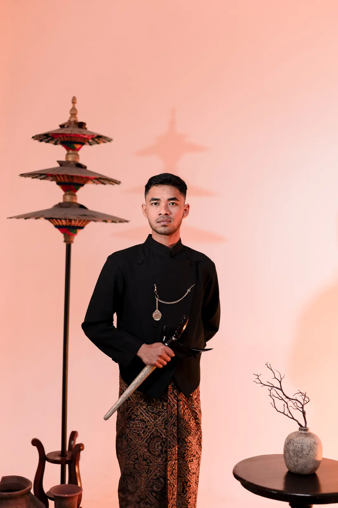
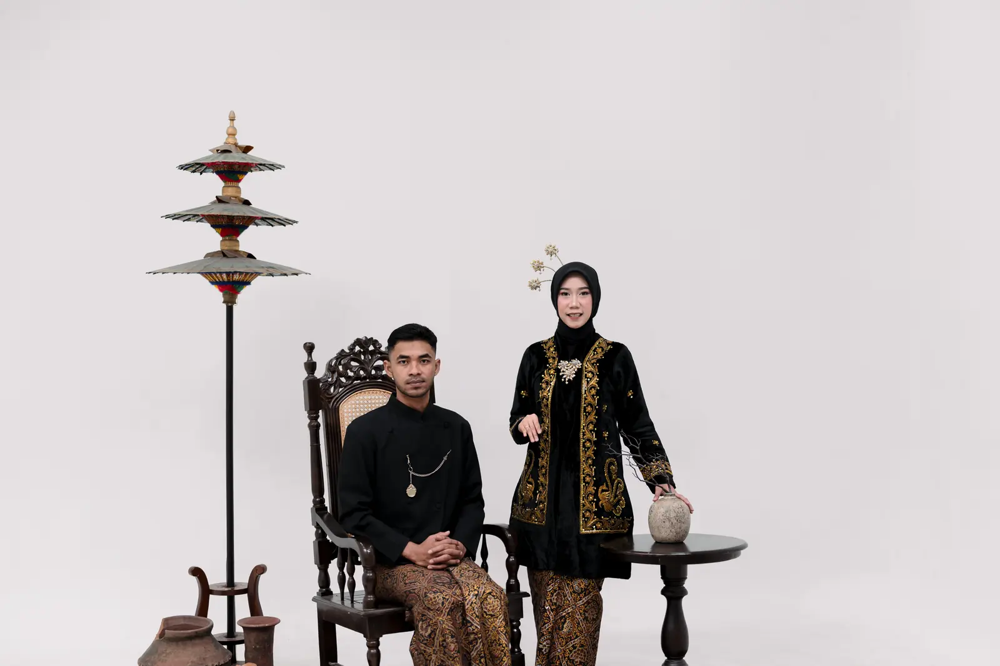
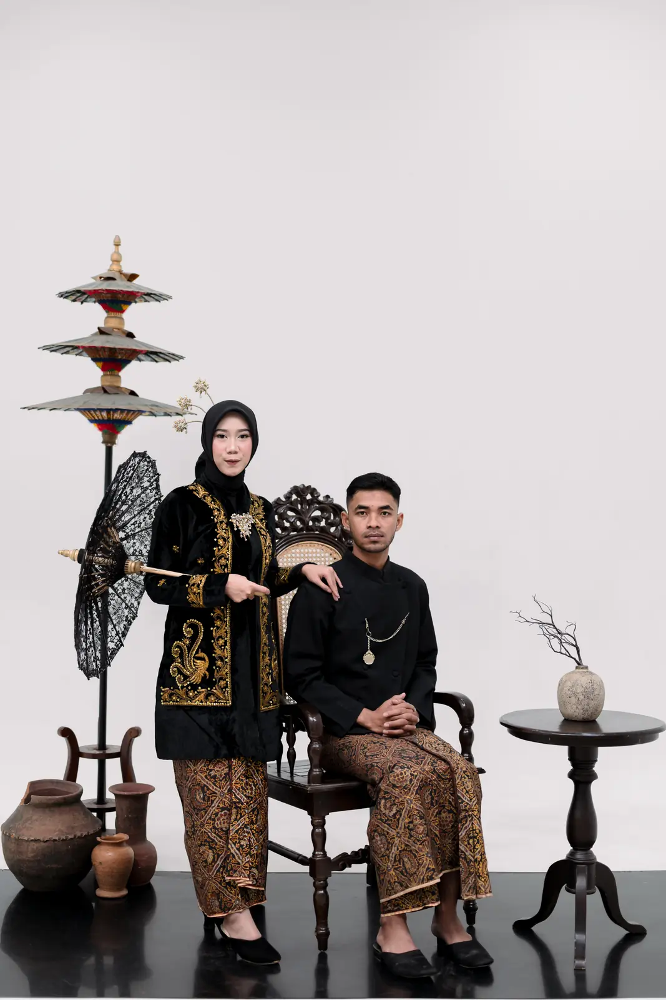
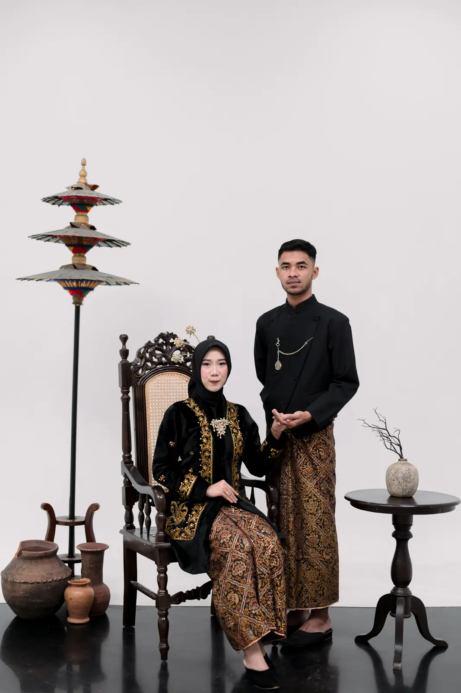
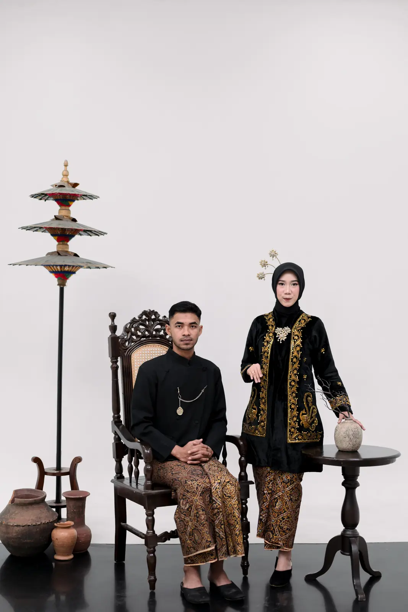
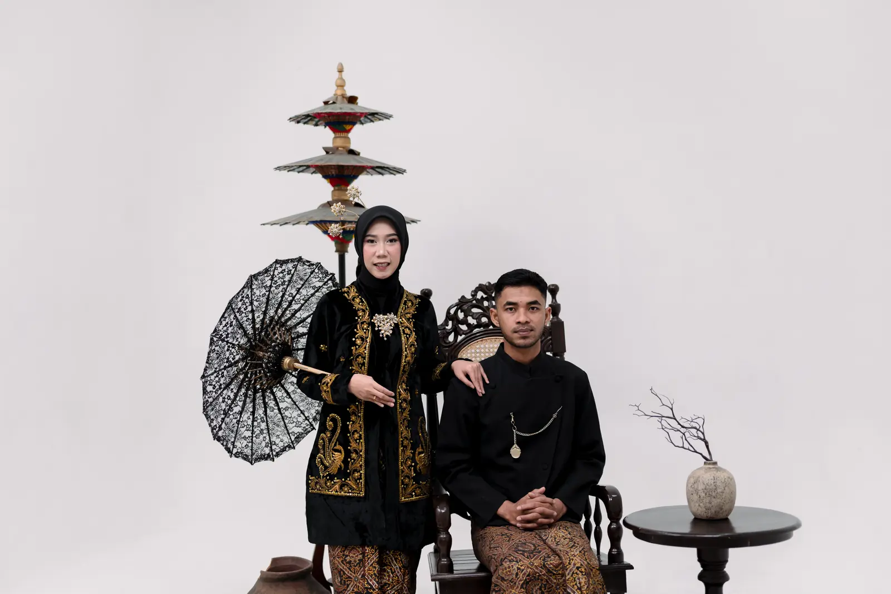
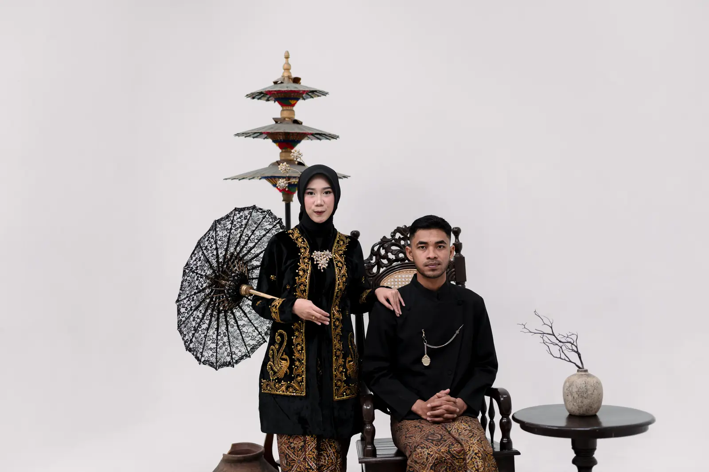
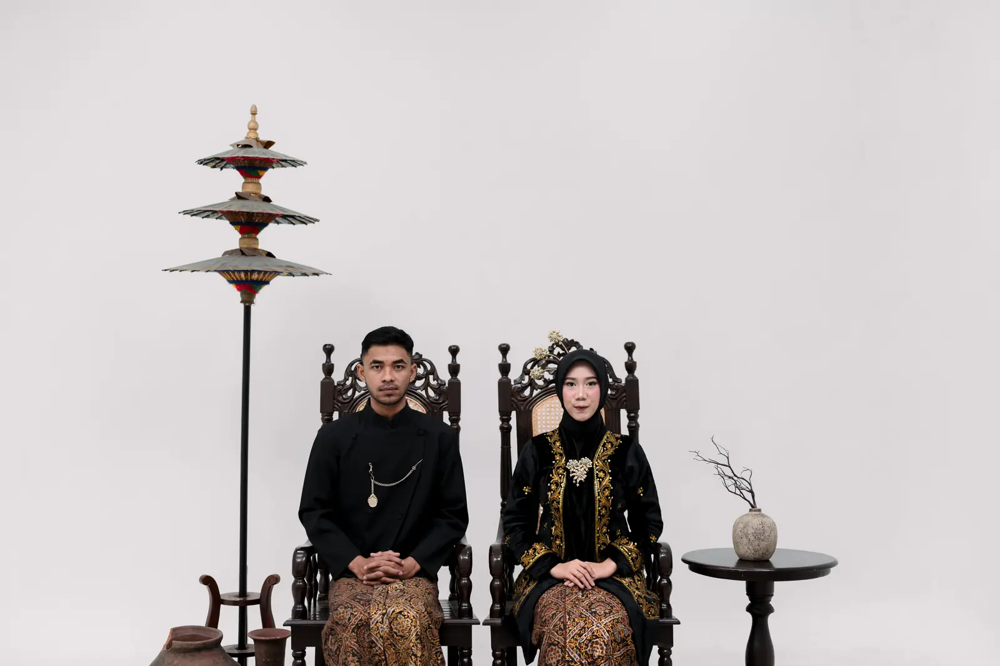

The Groom

Masda Agus Ruswoko
Putra Pertama dari Bapak Poniman & Ibu Andriyanti Juli
“Berakar dalam doa, bertumbuh dalam kasih. Seperti bumi yang setia pada porosnya, demikian niat ini dijaga, Alam raya mempertemukan, cinta mengikat-maka berbahagialah kita,selamanya.”

Sabtu, 3 Oktober 2026
09.00 WIB - Selesai
Dsn. Kedung sumur Rt.004/Rw.002 Ds. Canggu Kec. Jetis Kab. Mojokerto, Jawa Timur
Location
Sabtu, 3 Oktober 2026
14.00 WIB - Selesai
Dsn. Kedung sumur Rt.004/Rw.002 Ds. Canggu Kec. Jetis Kab. Mojokerto, Jawa Timur
LocationWedding • Gift
Kehadiran Bapak/Ibu/Saudara/i Salindri merupakan sebuah do'a serta rasa syukur bagi kami. Jika memberi adalah bentuk do'a dan cinta kasih, Anda dapat memberi kado secara cashless.
Salindri Retno Malini Kusuma Supardi
Masda Agus Ruswoko


The • Journey

Tak ada perkenalan panjang dalam kisah Masda dan Nini. Semuanya berawal dari satu pesan sederhana, yang tanpa mereka sadari menjadi pintu bagi pertemuan pertama.

Hubungan mereka berjalan seperti layang-layang di udara, kadang ditarik mendekat, kadang dilepas menjauh. Ada masa datang yang hangat, ada pamit yang menggantung hadir di waktu yang sama.
Dalam perjalanan itu, suara Masda dan Nini pernah saling menutup, ego pun sempat bersahut lebih keras dari rasa. Namun mereka memilih memperbaiki keping demi keping.
Perlahan, ego diturunkan dan doa ditinggikan yang membuat mereka berhenti menuntut, lalu memilih mengikat rasa percaya sebagai pijakan awal.

Dan setelah kata akad terucap, cerita mereka akhirnya dimulai. Kini Masda dan Nini berjanji untuk saling memeluk saat lelah, menggenggam ketika ragu, dan saling menuntun.
Gallery
RSVP
Konfirmasi Kehadiran
& Ucapan Selamat
Terima • Kasih
Merupakan sebuah kehormatan dan kebahagiaan bagi Kami jika Bapak/Ibu/Saudara/i berkenan hadir dan memberikan doa restu bagi Kami